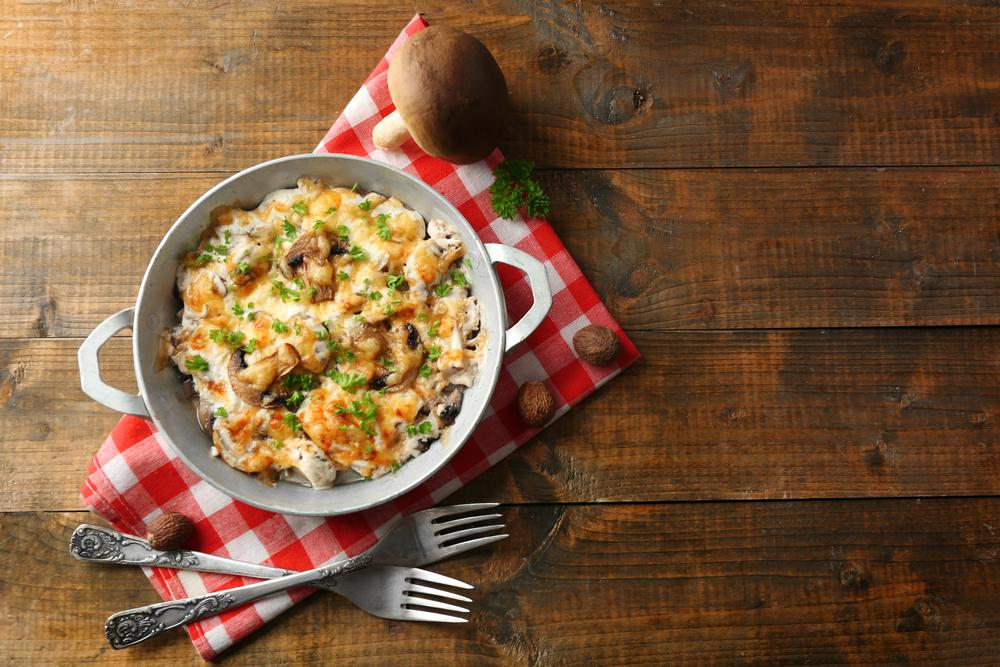

Жульен
Вопреки мифам жульен - это не французское блюдо, а придуманная в России закуска из запеченного мяса с грибами под румяной корочкой. Во Франции жульеном называют способ нарезки овощей тонкой соломкой. Однако каким бы не было происхождение блюда, оно остается любимым осенним блюдом из грибов. Для жульена можно использовать лисички, шампиньоны, белые и другие грибы и куриное филе. Жульен запекают в сметане или сливках, а сверху покрывают сыром. Для запекания используют жаропрочную миску или тарталетки.
Куриное филе нарезать кубиками и обжарить на сковороде 5-7 минут. Грибы и лук промыть, нарезать, добавить на сковородку к мясу и обжаривать до выпаривания жидкости. Добавить в сковородку сметану и перемешать. Сыр натереть на терке, зелень мелко нарезать. Часть сыра положить в сковородку, добавить укроп, перец, мускатный орех, соль, перемешать и выключить огонь.
Горячий жульен быстро разложить по формочкам или в большую форму. Сверху присыпать оставшимся сыром. Выпекать в разогретой духовке при 180 градусах примерно 10 минут до румяности сыра. Подавать жульен горячим.